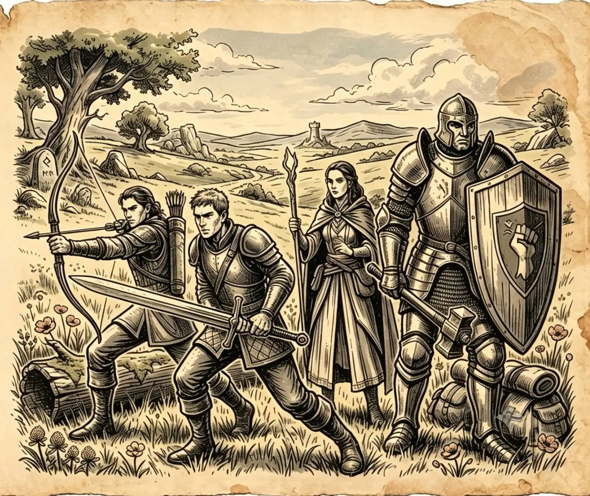
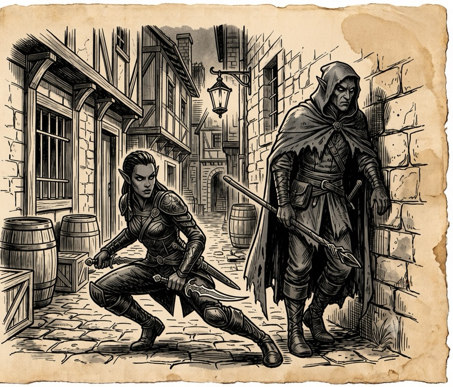
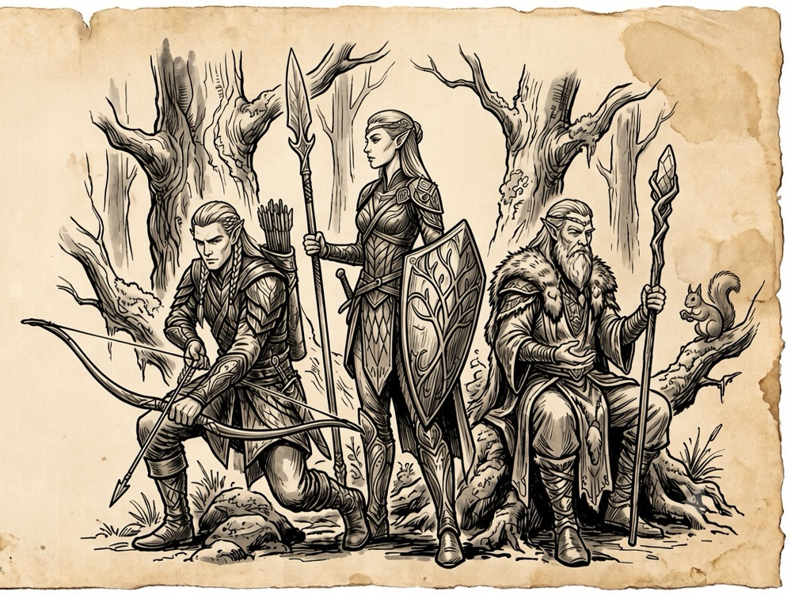
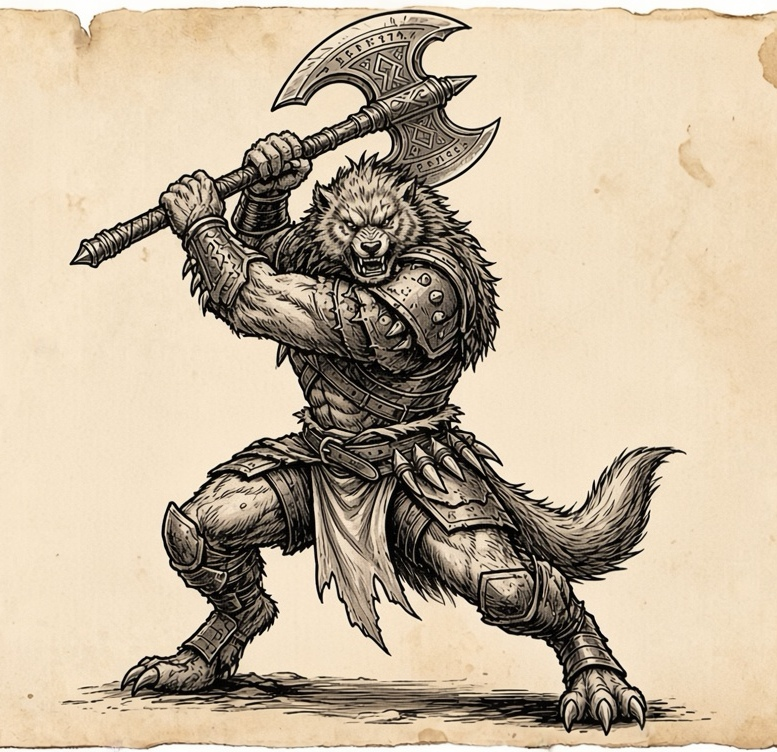
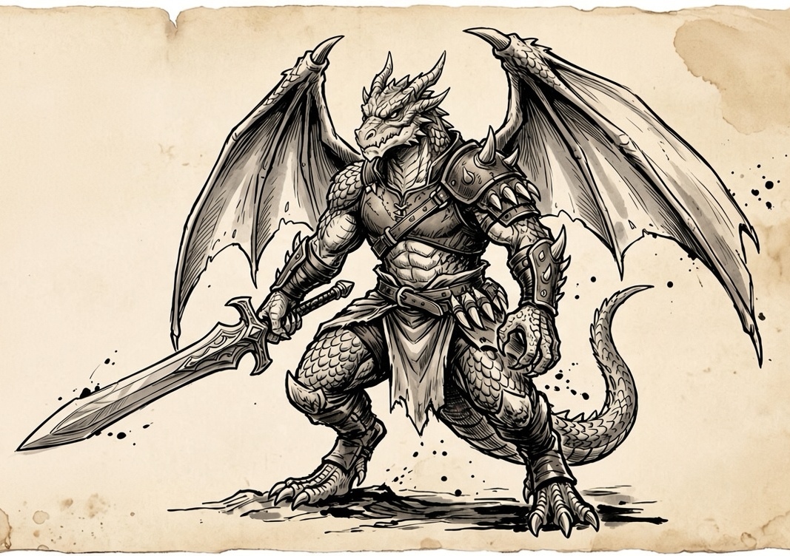

~ Книга Первая: Народы Эфира ~
Каждая раса имеет доступ только к определенным веткам навыков.
1. Люди (Империя Аквилон)

[span_0](start_span)[span_0](end_span)Стиль игры: Универсалы, Маги-артиллеристы, Паладины.
Доступные стихии: Люди физиологически не привязаны к Эфиру, поэтому изучают его как науку. При создании персонажа Игрок-человек обязан выбрать только ОДИН базовый элемент (Огонь, Вода, Воздух или Земля). На высоких уровнях (если вступит в Академию Арканума) может разблокировать одну родственную стихию.
Полный запрет (Официально): Тьма и Смерть. (Но в боте можно сделать скрытый класс "Некромант" или "Чернокнижник" для людей-отступников, за которыми будет охотиться стража Империи).
Пассивный бонус — «Адаптивность»: Получают на 5% больше опыта (EXP) и золота за победу над монстрами. Имеют один дополнительный слот для экипировки кольца или артефакта.
Активный навык — «Резонанс Группы»: Усиливающий бафф. Если в группе с человеком есть представители других рас, их пассивные расовые бонусы временно удваиваются на 3 хода.
2. Тёмные эльфы (Умбрарас)

[span_1](start_span)[span_1](end_span)Стиль игры: Скрытность, Убийцы (Ассасины), Дебаффы.
Доступные стихии: Лёд (Основная), Тьма (Девиантная).
Полный запрет: Огонь, Свет, Жизнь, Воздух, Земля, Вода.
Механика: Магия Тьмы накладывает эффекты кровотечения и слепоты, а Лёд снижает скорость врагов. Тёмные эльфы бьют редко, но в спину и с огромным критическим уроном.
Пассивный бонус — «Покров Ночи»: Базовый шанс критического удара увеличен на 10%. В подземных локациях или ночью шанс уклонения дополнительно возрастает.
Активный навык — «Теневой Шаг»: Мгновенный рывок за спину врага. Позволяет полностью уклониться от одной направленной атаки и гарантирует, что следующий удар Тёмного эльфа нанесет критический урон.
3. Эльфы (Лесной Домен Элдоран)

Стиль игры: Контроль толпы, постепенный урон (Доты), Баффы.
Доступные стихии: Земля (Основная), Вода (Основная), Воздух (Вспомогательная).
Полный запрет: Огонь, Тьма, Смерть, Лёд, Молния. (Магия Жизни под запретом из-за трагедии в Эарлине, за ее использование эльфа могут изгнать).
Механика: Отличная синергия. Могут намочить врага Водой, а затем опутать корнями (Земля). Заклинания дешевые по мане, кастуются быстро.
Пассивный бонус — «Эфирный Симбиоз»: Постоянная пассивная регенерация маны (MP) и здоровья (HP) каждый ход боя, если Игрок не получал прямого урона в предыдущем ходу.
Активный навык — «Живые Путы»: Сильный контроль. Мгновенно опутывает выбранную цель, снижая ее защиту от стихий и запрещая использовать навыки перемещения или физические атаки на 1 ход.
4. Зверолюды

Зверолюды воспринимают магию не как науку, а как продолжение своего тела. Они редко бросаются заклинаниями на расстоянии, предпочитая направлять Эфир внутрь себя для физического усиления (Шаманизм крови).
Стиль игры: Ловкачи, Бойцы ближнего боя с высоким уклонением, Охотники (DPS/Уклонение).
Доступные стихии: Воздух (Основная — для молниеносной скорости, прыжков и рывков), Земля (Вспомогательная — для укрепления шкуры, когтей и сокрушительных ударов).
Полный запрет: Свет, Тьма, Смерть, Лёд, Огонь. (Эти элементы требуют слишком глубокой концентрации или искусственного преломления Эфира, что противоречит их инстинктам).
Механика: Заклинания Зверолюдов работают как селф-баффы (усиления на себя). Например, заклинание «Поступь Ветра» не наносит урон Воздухом, а дает Игроку шанс 50% уклониться от следующей атаки и нанести два удара когтями/клинками за один ход.
Пассивный бонус — «Животный Инстинкт»: Базовый шанс уклонения от любых физических и направленных магических атак увеличен на 15%. Если Зверолюд успешно уклоняется от удара, его следующая атака в этом же ходу гарантированно накладывает дебафф «Рваная рана» (Кровотечение, наносящее урон каждый ход).
Активный навык — «Охотничий Раж»: Навык снятия контроля и взрывного урона. Активация мгновенно снимает со Зверолюда любые эффекты контроля (Оглушение, Опутывание, Заморозка) и позволяет в этот же ход нанести серию из 3-х быстрых физических ударов. Отличный скилл, чтобы вырваться из ловушки Эльфа или Тёмного мага и сразу же наказать обидчика.
5. Дракониты (Кланы Игниса)

Стиль игры: Ближний бой, агрессивный урон (Бурст), Танки.
Доступные стихии: Огонь (Основная), Молния (Девиантная, открывается на высоких уровнях), Земля (Вспомогательная, для брони).
Полный запрет: Вода, Лёд, Тьма, Свет, Жизнь, Смерть.
Механика: Заклинания Драконитов часто кастуются прямо через оружие (например, «Пылающий удар секирой»). У них мало маны, но магия расходуется экономно, усиливая физические атаки.
Пассивный бонус — «Драконья Чешуя»: Врожденное сопротивление физическому урону (базовая броня увеличена на 15%). Полный иммунитет к дебаффу «Горение».
Активный навык — «Истинная Ярость»: Навык контратаки. Чем ниже опускается показатель здоровья (HP) Игрока, тем выше становится исходящий физический урон. При HP ниже 20% атаки игнорируют часть брони цели.
~ Книга Вторая: Атлас Мира ~
🏛️ Империя Аквилон (Люди)
1. Элизия — Белокаменная Столица
Суть локации: Сердце Империи. Город-монумент, разделенный на три гигантских яруса на склонах искусственной горы, призванный подавлять своим величием.
Архитектура и атмосфера: Белый мрамор и золото. Воздух пропитан запахом озоном (от постоянного колдовства) и храмовыми благовониями. Небо рассекают парящие на потоках воздуха курьеры-маги.
Общество и быт: Строгое разделение слоев. На верхних ярусах царит закон и порядок, в то время как на самом дне, в Трущобах Пепла, куда не доходит свет фонарей, процветает криминал, обитают беглые преступники и шарлатаны.
Ключевые объекты и особенности:
- Площадь Главных Врат: Колоссальная платформа с крупнейшими телепортами, которые сейчас искрят пугающими фиолетовыми разрядами.
- Шпиль Арканума: Парящая башня Академии, нарушающая законы физики, с алхимическими лабораториями и тайными темницами для магов Тьмы.
2. Порт-Байлесс (Глубоководная Гавань)
Суть локации: Главный морской узел Империи, где официальные законы столицы работают только на бумаге.
Архитектура и атмосфера: Километры деревянных пирсов. Таверны и бордели построены из перевернутых корпусов старых кораблей. Пахнет солью, гниющей рыбой и ромом. Туманы искусственно разгоняются магами Воды и Воздуха.
Общество и быт: Город абсолютной свободы, наемников и контрабандистов. Реальная власть принадлежит негласному совету пиратских баронов и коррумпированных адмиралов.
Ключевые объекты и особенности:
- Рынок Утопленника: Черный рынок, скрытый в затопленных пещерах под портом, где идет торговля нелегальными мана-кристаллами и ядами тёмных эльфов.
🌲 Лесной Домен Элдоран (Эльфы)
3. Сильванар — Сердце Леса
Суть локации: Столица эльфов, которая была не построена, а выращена с помощью вековой магии Земли и Воды из гигантских Железных Деревьев.
Архитектура и атмосфера: Отсутствие углов, только плавные природные линии. Мягкий зеленый свет днем и биолюминесценция ночью. Густой, влажный воздух с ароматами древности, хвои и меда.
Общество и быт: Полная гармония с природой. Эльфы передвигаются по канатным дорогам из живых лиан или на лодочках по кристальным ручьям, текущим прямо по широким ветвям деревьев.
Ключевые объекты и особенности:
- Древо Жизни: Толстые корни старейшего дерева плотно обвивают Врата Пути, фильтруя энергию и защищая лес от технологического осквернения.
4. Руины Эарлин
Суть локации: Бывший город-сателлит эльфов, ставший смертоносным памятником вышедшей из-под контроля девиантной магии Жизни.
Архитектура и атмосфера: Безумно разросшаяся флора. Кровоточащие едкой смолой деревья и орхидеи, выделяющие споры паралича и галлюцинаций.
Общество и быт: Постоянного населения нет. Зону посещают только отряды отчаянных наемников ради добычи ценных ресурсов. Любая рана здесь заживает неправильно, обрастая опухолями.
Ключевые объекты и особенности:
- Клубок Артерий: Эпицентр руин, где можно добыть чистейшую, но крайне нестабильную эссенцию Эфира. Местные звери (волки с костяными наростами, хищные богомолы) сильно мутировали.
🌑 Подземный Синдикат Умбрарас
5. Ноктюрн — Город над Бездной
Суть локации: Мрачный шедевр архитектуры тёмных эльфов, высеченный прямо в стенах колоссального вертикального разлома, дно которого скрыто во тьме.
Архитектура и атмосфера: Здания цепляются за скалы и растут вниз, как сталактиты. Пробирающий до костей холод и густой ледяной туман. Скудное освещение дают лишь фиолетовые грибы и синие кристаллы Льда. Хрупкие на вид ледяные мосты-нити соединяют кварталы.
Общество и быт: Культ тишины и скрытности. Шумные рынки отсутствуют. Доступ к товарам и услугам осуществляется через закрытые Аукционные Дома, куда пускают только по рекомендациям.
Ключевые объекты и особенности:
- Платформа Врат Пути: Висит в самом центре бездны. К ней ведет единственный ледяной мост, который стража может мгновенно растаять по щелчку пальцев, сбрасывая врагов в пустоту. Торговля ведется секретами и заказными убийствами.
🌋 Кланы Игниса (Дракониты)
6. Вулканическая Цитадель Кар-Орот
Суть локации: Город-кузница, монументально выдолбленный внутри огромного спящего вулкана.
Архитектура и атмосфера: Грубые, массивные здания и огромные двери из черного обсидиана и базальта. Невыносимая жара, сухой воздух с запахом серы, пота и раскаленного металла. Освещение обеспечивают естественные потоки магмы, они же служат печами для ковки. Постоянный гул мехов и звон молотов.
Общество и быт: Военизированное общество кузнецов и воинов с тяжелой комплекцией. Все споры и вопросы лидерства решаются исключительно через поединки.
Ключевые объекты и особенности:
- Арена Пепла: Огромный кратер в центре города для испытаний нового оружия и боев на магии Огня и Молний, из-за чего под сводами пещеры постоянно собираются грозовые тучи.
7. Ущелье Драконьего Клыка
Суть локации: Единственный наземный путь в неприступные земли драконитов.
Архитектура и атмосфера: Узкий, клаустрофобный каньон. Завывающий ветер глушит все звуки. Земля густо покрыта пеплом и костями тех, кто пытался пройти без приглашения.
Общество и быт: Постоянно дежурящий суровый военный гарнизон драконитов, готовый отразить любую наземную атаку.
Ключевые объекты и особенности:
- Оборонительные рубежи: Стены ущелья плотно усеяны смертоносными баллистами и магическими рунами взрыва.
✨ Мерцающий Двор (Феи)
8. Ауралия — Парящие Острова
Суть локации: Сюрреалистичное место, состоящее из кусков земли с цветущими садами, парящих в небесах над зеркально гладким Озером Миражей.
Архитектура и атмосфера: Вечная радужная дымка от водопадов, испаряющихся в воздухе. Здания не имеют заборов и стен — они сотканы из света, прочных перламутровых паутин и хрусталя. Атмосфера абсолютной умиротворенности.
Общество и быт: Феи, кажущиеся беспечными, скрывают за своим смехом древний интеллект. Передвигаются исключительно на мерцающих крыльях.
Ключевые объекты и особенности:
- Павильоны Исцеления: Уникальные центры девиантной магии Света, куда приносят проклятых и безнадежно больных. Оплата взимается не золотом, а концептуальными вещами (самый счастливый день детства, искра удачи).
☁️ Аэтерон — Жемчужина Неба
Аэтерон не просто парит в небесах — он плывет по течениям невидимых эфирных рек, медленно вращаясь над гигантским Оком Эфира (кратером в центре Аурхейма). Город построен из белого и золотого пористого камня, который почти ничего не весит, а сквозь его фундамент прорастают лозы светящихся растений. С краев города непрерывно срываются водопады, чьи струи на лету превращаются в искрящийся туман и радуги.
Аэтерон — это симфония света, архитектуры и магии, где каждый уголок дышит спокойствием.
✨ Хрустальный Атриум Звездопада (Зал Пробуждения)
Именно здесь открывают глаза новоприбывшие Странники.
Визуал: Это не закрытое помещение, а колоссальный открытый амфитеатр из полупрозрачного стекла, висящий на самом высоком уровне Аэтерона. Вместо потолка — открытое небо, которое здесь всегда кажется звездным, даже днем. Пол покрыт тончайшим слоем теплой воды, в которой отражаются небесные светила.
Атмосфера: Повсюду распускаются эфирные лотосы размером с человека. Когда душа Игрока падает с небес, она мягко опускается в центр такого цветка. Лепестки смыкаются, пульсируя мягким светом, а затем раскрываются, выпуская Странника. Воздух здесь звенит, как хрустальные бокалы.